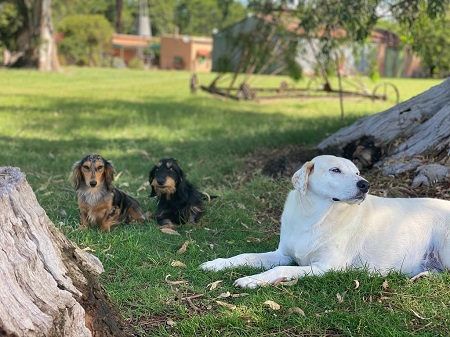

El Naranjo fue establecido en 1856 por Ramon y Marta, oriundos de Italia, con mucho trabajo y esfuerzo hecharon raices en San Andres de Giles, luego de investigar bien la zona decidieron construir la casa y trabajar las tierras. Luego fue pasando de generacion en generacion. Hoy en dia es un predio que se utiliza para la vida familiar y se comparte a quienes quieran venir a relajar y conocer.
